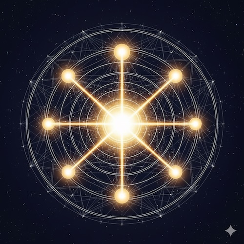

Глава 6. Анализ Натальной Карты: Иерархическая Модель Личности
Содержание:
6.1 Ключевые Компоненты Анализа
6.2 Иерархические Уровни Значимости
6.3 Границы Интерпретации: Карта, Субстрат и Контекст
6.4 Натальная Карта как Предназначение

Введение: От Теории к Практике
Анализ натальной карты в [МНА] — это не просто "чтение символов", а систематическое выявление фундаментальных предрасположенностей индивида. Он строится по иерархической модели, где элементы классифицируются по их роли в структуре личности.
6.1 Ключевые Компоненты Анализа
Мы используем четыре основных элемента в обеих системах координат:
- [Планеты-Маркеры]: Фундаментальные психологические функции.
- [Кардинальные-Аспекты]: Структурно значимые связи между функциями.
- [Дома] (геоцентрика): Сферы жизни, где проявляется принцип.
- [Знаки]: Стиль проявления (гео) или объективная суть задачи (гелио).
6.2 Иерархические Уровни Значимости
Модель [МНА] выделяет уровни [веса] планетарных принципов:
Уровень 0: Фундаментальное Ядро
Солнце и Луна. Полярность Сознания и Подсознания. Центр интеграции и база инстинктивной реактивности.
Уровень 1: Ключевые Модуляторы
Планеты в кардинальных аспектах к Светилам или находящиеся у Угловых Точек карты (Asc, IC, Dsc, MC). Это "несущие стены" психологической структуры.
Уровень 2: Жизненные Динамики
Кардинальные аспекты между парами планет. Создают устойчивые сценарии взаимодействия. Особо значимы, когда аспект повторяется и в гео-, и в гелио-карте (Резонанс двух слоев).
Уровень 3: Фоновая Палитра
Базовые положения без кардинальных связей и не-кардинальные фазы. Формируют богатство характера, но не его основной каркас.
6.3 Границы Интерпретации: Карта, Субстрат и Контекст
Опыт человека формируется тремя факторами:
- Биологический Субстрат: Генетика, темперамент, "аппаратная часть" тела.
- Резонансный Отпечаток (Карта): "Операционная система", настройки фильтров восприятия.
- Жизненный Контекст: Воспитание, социум и сознательные выборы "пилота".
[МНА] объясняет только второй фактор — предрасположенность к резонансу, но не сам факт или характер реакции, который зависит от биологии и воли.
6.4 Натальная Карта как Предназначение
Карта — это ваш резонансный профиль. Мы часто учимся игнорировать "звонки" Поля, предназначенные именно нам, что ведет к ощущению нереализованности. Реализация потенциала — это сознательное выравнивание жизни со своим врожденным профилем для вхождения в "состояние потока".